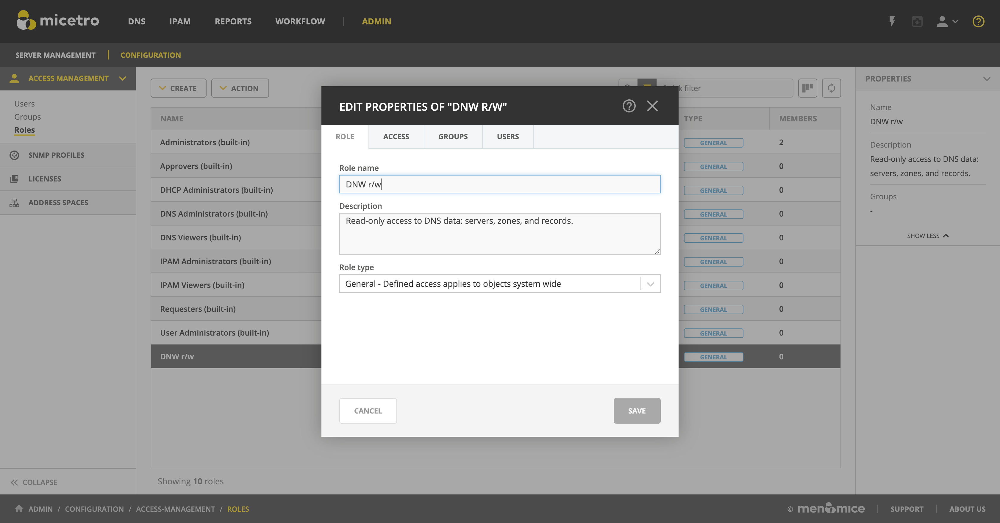

Role-based access example
Note
Access management has changed in Micetro 10.1. To view the access management example used in previous versions, switch to the appropriate version number using the version selector.
Introduction
This article aims to provide practical information on Roles and detailed, step-by-step breakdowns for two scenarios: creating a new, read-only role for DHCP scopes, and using the built-in DNS viewers role to set up a DNS read-write role.
The information on this page, and the how-tos presented, will provide a blueprint to customize Micetro to your requirements.
Built-in roles
The seven built-in-roles have been designed to cover most use cases for access control in Micetro. The access settings for the built-in roles can’t be modified.
Tip
Built-in roles are all General roles and applied to all objects in Micetro, existing or future.
Example: adding a user or group to the Administrators (built-in) role, the user (or group members) automatically gain administrative access to all objects in Micetro.
User defined roles
As all DDI environments are different, Micetro allows creating flexible user-defined roles.
Tip
Creating new roles requires the Administer users/groups permission.
There are two ways of creating new roles in Micetro:
(Preferred) Duplicate an existing role and edit the permissions. See Duplicating a role.
Create a completely new role. See Adding a new role.
Tip
Men&Mice recommends using the built-in roles as templates and modifying the permission set for the duplicate roles.
Example role configuration: DNS zone read-write
The following steps illustrate how to create a read-write role in Micetro for DNS zones, using a built-in role as a template.
Tip
Using existing roles as templates makes refining access controls easier, as you can both copy over permissions and users / groups.
Log in to the Web Application.
{kind=link}
Navigate to and select Roles.
{kind=link}
Press the Create button and select From existing role.
{kind=link}
From the dropdown Select an existing role, click on
DNS Viewers (built-in).
Tip
If you have the role selected in the grid, From existing role will automatically fill in the value for convenience.
{kind=link}
Edit the Role name.
{kind=link}
Note
When duplicating a role, editing the Description is not available until the new role is created.
Select what to copy from the existing role: Permissions (default), Groups, and/or Users.
{kind=link}
Note
Duplicating roles will automatically set the role type to General.
Click Create to save the new role.
After saving the new role, Micetro will automatically display the Edit role properties dialog for it.
{kind=link}
Switch over to the Access tab and enable the following permission:
Group |
Permission |
|---|---|
DNS servers |
Add master zones |
DNS servers |
Add non-master zones |
DNS zones |
Edit zone access |
DNS zones |
List (or view) zone |
DNS zones |
View zone history |
DNS zones |
Enable/disable zone |
DNS zones |
Edit zone options |
DNS zones |
Delete zone |
DNS zones |
Enable/disable apex records |
DNS zones |
Edit apex records |
DNS zones |
Enable/disable wildcard records |
DNS zones |
Edit wildcard records |
DNS zones |
Enable/disable other records |
DNS zones |
Edit other records |
DNS zones |
Edit zone properties |
{kind=link}
Tip
Clicking the checkbox next to the DNS zones group will automatically select all permissions within the group.
Tip
For a handy reference for available permissions, see Permissions reference.
(Optional) Switch to the Groups tab and select the group(s) you’d like to assign to the role.
{kind=link}
(Optional) Switch to the Users tab and select the user(s) you’d like to assign to the role.
{kind=link}
Tip
Users and groups can be assigned to and removed from roles at any time.
Click Save to update the role settings.
Example role configuration: DHCP read-only
This
The following steps illustrate how to create a new, read-only role in Micetro for DHCP scopes only, without using the built-in role templates.
Log in to the Web Application.
Navigate to and select Roles.
Press the Create button and select New role
{kind=link}
Specify the Role name, e.g.
DHCP Read-Onlyand add a Description.
{kind=link}
Tip
Using descriptive names and clear text for the description makes access management easier.
Choose between the General or Specific role types.
{kind=link}
Note
The preferred role type in Micetro is the General roles. Specific roles exist to preserve backwards compatibility and added flexibility to edge use cases.
Switch over to the Access tab and enable the following permission:
Group |
Permission |
|---|---|
Ranges and DHCP scopes |
Read scope options |
{kind=link}
Notice that a blue (i) indicator appears on the top right. Hovering over will show that in order for the selected permissions to take effect, additional permissions will be set:
Group |
Permission |
|---|---|
Micetro |
Access to the web interface |
Micetro |
Access IPAM module |
Micetro |
Access to IPAM view in web interface |
DHCP servers |
List (or view) DHCP server |
Ranges and DHCP scopes |
List (or view) range |
Address spaces |
List (or view) address space |
{kind=link}
Tip
Micetro will automatically enable these permissions upon saving the new role. You can check the permissions granted to the role by switching to View defined using the radio button.
Tip
For a handy reference for available permissions, see Permissions reference.
(Optional) Switch to the Groups tab and select the group(s) you’d like to assign to the role.
{kind=link}
(Optional) Switch to the Users tab and select the user(s) you’d like to assign to the role.
{kind=link}
Tip
Users and groups can be assigned to and removed from roles any time.
Click Create to create the role.